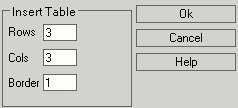

Na het klikken op Invoegen Tabel op de werkbalk, opent KTML3 een popup
venster om de eigenschappen van de tabel weer te geven:

- Rijen – geef het aantal rijen in; standaard waarde is 3;
- Kolommen – geef het aantal kolommen in; standaard waarde is 3;
- Rand – geef de dikte van de Tabel rand in; standaard waarde is 1.